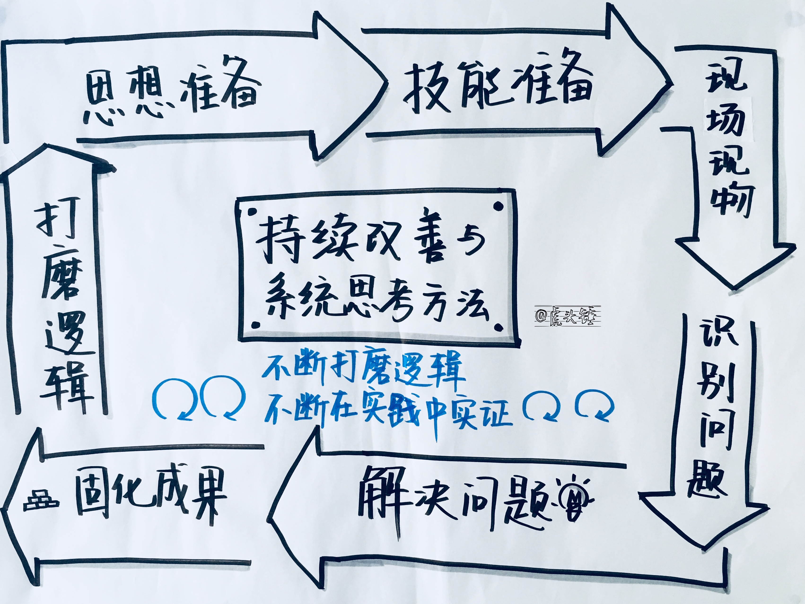
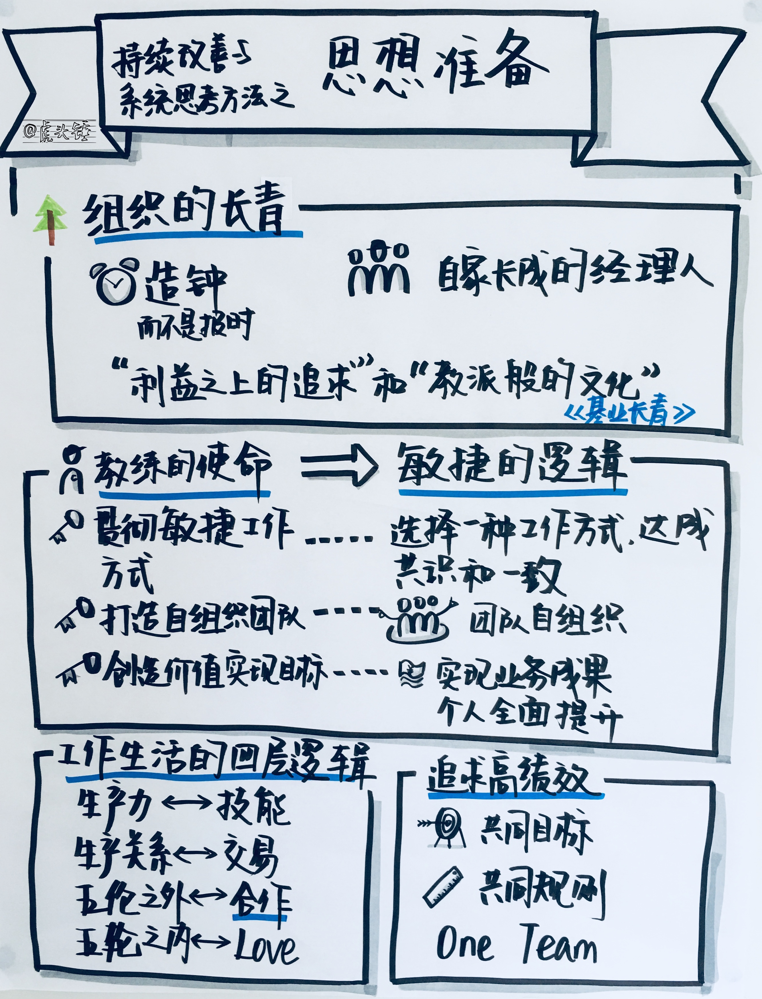
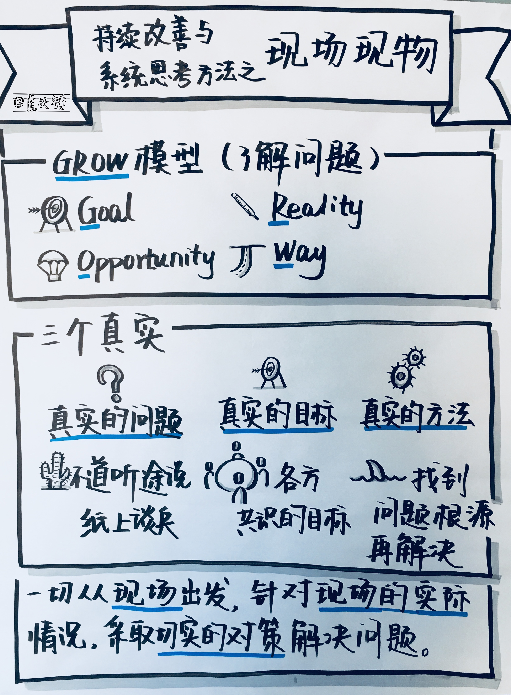
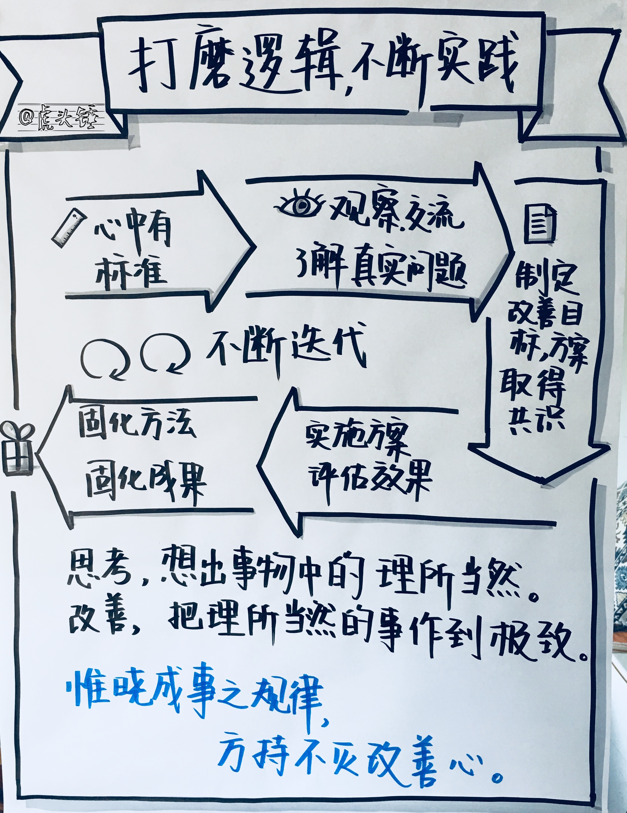

是什么让一个团队与另一个团队有所不同？是什么使得一个团队在敏捷教练离开后仍能保持提升？答案是一个团队内建的持续改善与系统思考能力，特别是 Scrum Master。一个具备持续改善和系统思考能力的 Scrum Master，就已经不是只顶着这个角色的 Scrum Master，而已经是个敏捷教练了。这与外在的角色和职位名称无关。
本文按以下这个大循环介绍持续改善与系统思考方法：
- 思想准备：组织的常青，教练的使命，敏捷的逻辑，工作生活的四层逻辑，追求高绩效
- 技能准备：敏捷宣言，Scrum 框架，精益思想
- 现场现物：GROW 模型-真实的问题，真实的目标，真实的方法
- 识别问题：观察，交流
- 解决问题：因果逻辑，PDCA，回顾会议
- 固化成果：提炼和运用模式
- 打磨逻辑，不断实践

本文介绍的思想会落实到下一章典型敏捷教练周期六步法当中，是六步法背后的思想和逻辑依据。作为敏捷教练，需要不断做两件事：一是不断打磨逻辑，二是不断在实践中实证。这两点，也是本课程的灵魂，和敏捷教练技能未来发展的基调。
思想准备

组织的常青
在《基业常青》一书中，科林斯和波拉斯确定“高瞻远瞩”公司的标准是：处于所在行业中第一流的水准、广受企业人士崇敬、对世界有着不可磨灭的影响、已经历很多代的 CEO、已经历很多次产品生命周期且在1950年前创立。根据这六条标准，他们选出的公司有：美国运通公司、波音公司、花旗银行、沃尔玛、迪斯尼公司等共18家。
这些常青公司有以下一些特质：
- “造钟，而不是报时”
科林斯指出，“伟大的公司的创办人，通常都是制造时钟的人，而不是报时的人。他们主要致力于建立一个时钟，而不只是找对时机，用一种适销对路的产品打入市 场；他们并非致力于领袖人物充满魅力的人格特质，而是致力于构建高瞻远瞩的公司组织特质，他们最大的创造物是公司本身及其代表的一切。”“造钟”就是建立一种机制，使得公司能够依靠组织的力量在市场中生存与发展，而不必依靠某位个人、某种产品或某个机会等偶然的东西。随着市场的进一步完善与规范，企业必须 越来越依靠一个好的机制，包括好的组织结构、好的评价考核体系、好的战略管理等。
- “利润之上的追求”与“教派般的文化”
所有伟大的公司都是“务实的理想主义者”。“利润是生存的必要条件，而且是达成更重要目的的手段，但对很多高瞻远瞩的公司而言，利润不是目的，利润就像人体需要的氧气、食物、水和血液一样，这些东西不是生命的目的。但是，没有它们，就没有生命。”利润之上的更高追求在伟大的公司里，更是被作为像“教派般的文化”那样所灌输。“利润之上的追求”如果不明确、不具体，就会是空洞的大口号。企业要意识到企业文化的重要作用，“教派般的文化”指的是卓越公司必须具有很强的共同价值观。
- “自家长成的经理人”
“18家伟大的公司在总共长达1700年的历史中，只有四位 CEO 来自于外部”。“自家长成”的经理人熟悉了解本公司文化，更易带领本公司进行变革。 其实，任何一个公司无论长盛不衰还是昙花一现，都有意无意地由一种理念所指引。
这三个特质，跟我们在前文数次提到的作为精益和敏捷鼻祖的丰田 4P 完全吻合。
教练的使命:
要成为一家高瞻远瞩的公司，需要有一个像丰田 4P 那样的体系。体系的落实，需要教练。在丰田，经理就是教练，教练是一种管理职责。在丰田之外，经理与教练分离。教练需要在一定范围内取得组织授权，以便履行教练的职责：
- 按照敏捷思想，采用一种方法，比如 Scrum。最起码在团队中取得形式上的共识和一致。
- 团队自组织。以敏捷思想为指导，通过共识机制，持续改善与解决问题。
- 以前两者为基础，取得好的业务成果。同时个人获得职业生涯和工作生活上长期全面的好处。
第1点相对直观，第2点的逻辑基础是：好公司。
在非理想状态下，重点可以放在第1点，对第2点做有限度的追求。不管环境如何，我们依然可以有所作为。好与坏不是非黑即白，而是同一频谱上的两个点。我们能做的，是施加一点好的影响。
好公司的标准
- 员工有相对体面的收入和足够的激励。
- 有相对公平平等透明的制度。努力与结果之间有清晰的影响关系。
- 经理与员工之间互相扶助的关系。
- 公司有前途，有奔头。
- 员工技能提升与发展。
- 有明确的努力方向。
- 晋升加薪的机会。
- 以员工为中心，员工有机会参与和影响公司管理。
- 工作环境和制度人性化。尊重人。
- 流程合理，不会有很多阻滞，办事不难。
工作的稳定性和保障性。
第1点和第2点的区别是，第1点是相对可以有形化和规定化，第2点需要大家的讨论和共识。没有共识，第1点也难以执行。而第2点也离不开敏捷思想的指导。自组织不是一个悬空的虚拟的概念的问题，而是一种持续改进的共识的共同的问题解决。自组织不是一种脱离内容的形式，而要以内容即工作组织和问题为出发点。
在非理想情况下，打造自组织，可以采用的方法是，受限的共识，和受限的自组织，受限的好团队。不管环境多么恶劣，共识的空间是有的。共识与流动即知行合一。
团队的发展阶段
无组织（各自为政，效率低下）
- 被动的自运转（Scrum Master 驱动）
- 自运转（自动按 Scrum 运作）
- 受限的自组织（大环境不理想）
自组织（基业长青）
找到一些问题（如跨职能团队，价值流优化，团队工作），推动团队达到哪怕是不完美的共识，和不完美的执行。
团队的三个角色之外，也要把经理纳入共识的范围。问题的解决不用那么急迫。因为没有共识，急迫也没有用。大环境之下，团队之间差异的原因，如团队的构成，团队的年资等，也是值得思考的点。以逻辑的甘露，在理念和团队事实上，有步骤地把一团意大利面拉直成拉面。
工作生活的四层逻辑
- 生产力，其逻辑是技能。工作方式是否能辅助大家的技能提升呢？
- 生产关系，其逻辑是交易。如何影响分配的规则呢？
- 五伦之外，其逻辑是合作。如何找出大家共同追求的东西呢？
- 五伦之内，其逻辑是爱。如何激发人的善意呢？
不管环境多么恶劣，合作还是可以存在的。合作既是敏捷的基础，也是敏捷的核心。
追求高绩效
在一个组织中，大家有共同的目标，共同的规则，就可以追求高绩效了。
建立 One Team 的理念和实践。在一个团队中，可以就所有问题公开讨论，包括绩效管理，个人发展，技术，管理，业务，工作满意度，员工参与度等。
一个组织的形态，往往都是不够理想的。在这种情况下，我们心目中要有最终的理想，并根据情况，制定阶段性的理想。
技能准备
技能准备的部分在本课程的前面部分已经涵盖，总结下来，包括：
- 敏捷宣言
- Scrum 框架
- 精益思想
- 技术实践
- 教练方法
- 自我提升
- 对组织和团队发展阶段的认识
- 本章的系统思考和持续改善
有了思想和技能上的准备，就进入现场现物的了解问题。
现场现物

了解问题可采用 GROW 模型：
- Goal 目标：组织和团队的目标是什么？是速度提升吗？是质量提升吗？干系人对目标的共识程度如何？
- Reality 现状：现状是什么？现在采用的工作方式是什么？实际运作是怎样的？实际运作中有些什么问题？
- Opportunity 机会：是否存在提升的机会？各方干系人的支持程度如何？有什么不可克服的障碍？提升之后对团队意味着什么？
- Way 方法：具体可采用哪种敏捷方法？是一步到位还是阶段性的？
要注意三个真实
真实的问题：亲自了解问题，而不是道听途说纸上谈兵。
真实的目标：各方共识的目标。
真实的方法：找到问题的根源再解决，而不只是一些形式上的措施，比如针对一个表象的问题搞一次形式上的培训。
识别问题
识别问题的途径包括：
- 观察：亲自去看团队的运作，特别是各种项目会议，日常交流，工作物件。有条件的话，可以看下团队实际的日常工作。
- 交流：尽可能与所有团队成员和干系人一对一交流，了解他们观察到的现状，看法和建议。
解决问题：
解决问题可以采用的方法包括：
- 因果逻辑：对问题要找到原因，从源头上解决。了解团队运作的系统动力。如果只是做一些表象上的规定，根本无法落实和执行。
- PDCA：解决问题要有完整的循环，包括识别问题分析问题设定目标分析根源制定对策的计划阶段，贯彻对策的执行阶段，评估效果的检查阶段，和标准化的调整阶段。
- 回顾会议：利用群体智慧，解决问题。
固化成果
从解决问题中学习，把解决问题的方法提炼成模式。
在模式一章已经介绍了一些模式。再补充一些如下：
- 在站会中，会观察到一些好模式，如细颗粒度的协作。当一位团队成员说他要启动一个任务，跟他的任务相关的其他团队成员会立即响应说他会同时启动那个相关的任务。把这种观察拿到回顾会议上讨论，让团队参与这种模式的提炼，并丰富细节，记录下来。因为模式是大家共同提炼的，可执行性更强。
- 团队共同参与的庆祝成功也是一种模式。团队有共同的目标，经过努力，取得了值得一提的成功，大家就要庆祝一下。这种成功是属于大家的，并且成功能促进更多的未来成功。
- 制度化客户反馈与产品想法的分享。产品负责人可以把向团队分享客户反馈和产品想法制度化，例如在产品列表精化会和迭代计划会分别固定一块时间拿来分享这类信息。目的是让团队更全面的了解客户，知道自己工作的意义。方式上可以打磨，产生一种花费时间最少又对所有人最有意义的形式。
打磨逻辑，不断实践

系统思考和持续改善并不是什么高深的东西，最后总结如下：
- 对于好的工作方式，心中要有标准，这个标准是我们追求的理想状态，也是问题的鉴别器。
- 心中带着标准，去观察现状，去和干系人交流，了解真实的问题。
- 制定改善目标和改善方案，并取得干系人的共识和支持。
- 实施方案，评估效果。
- 固化方法，固化成果。
- 以迭代的方法重复上述步骤，以敏捷的方式做敏捷。
- 逐步加深解决问题的深度。在解决问题的同时，深化共识和合作。
- 始终不忘事件之间的因果逻辑，并持续躬身实践。
唯晓成事之规律，方持不灭改善心。思考，就是想出事物当中的理所当然。改善，就是把理所当然的事做到极致。